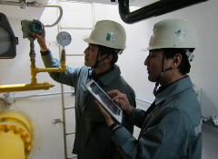

대기오염물질 배출시설 사업자가 이행해야 하는 자가측정 의무. 배출구별 오염물질을 측정·기록·보관하고, 측정 주기 관리까지 대행합니다.

※ 측정 항목·주기는 배출시설 종별(1~5종)과 오염물질에 따라 달라집니다. 자가측정 결과는 기록·보관 의무가 있으며, 미측정·미보관 시 행정처분 대상이 될 수 있습니다.
배출구·오염물질별로 정확하게 시료를 채취하고 분석합니다.
측정 결과를 법정 양식으로 기록하고 보관 요건을 충족합니다.
시설 종별 측정 주기를 관리하고 기한 전에 안내해 드립니다.
배출시설 종류만 알려주시면 측정 주기와 항목을 안내해 드립니다.